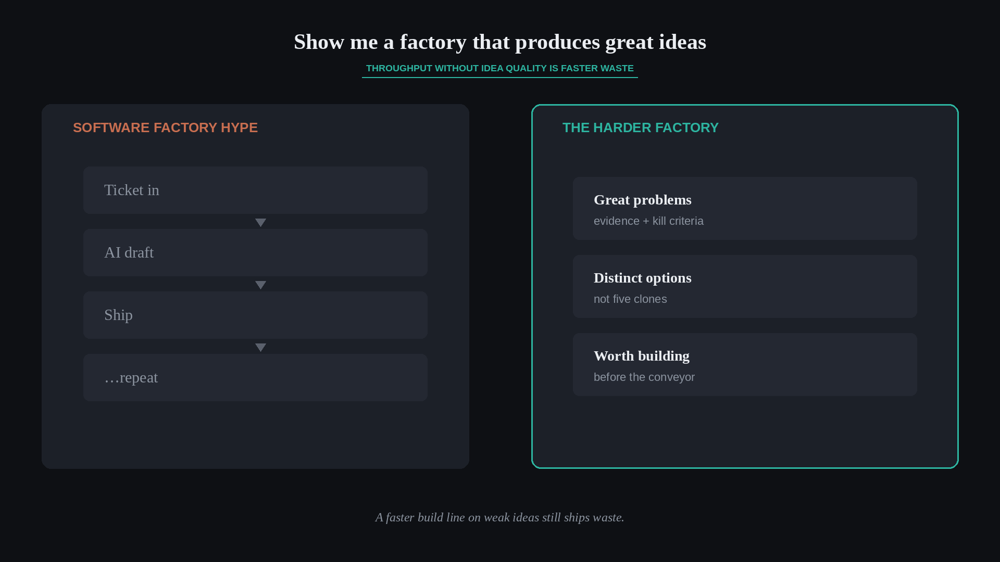

Show me a factory that produces great ideas
Source: George / prodmgmt.world (@nurijanian)
original post
What it claims
Everyone is obsessed with “software factories,” as if today’s human process were already a smooth factory — or as if people quoting factories had built or optimized one, or even read The Goal. Most factory talk is slop, works only for that one company, doesn’t work, or isn’t a factory. The harder ask: show a factory that produces great ideas to build.
Why it matters for a PO
POs get pulled into throughput theater — more tickets, more AI agents, more “factory” metaphors — while discovery and problem framing stay thin. A faster build line on weak ideas still ships waste. Your scarce job is selecting and shaping problems worth solving, not maximizing the conveyor of features.
3 takeaways
- Throughput without idea quality is a faster path to the wrong product.
- Treat “software factory” pitches as claims to inspect: what bottleneck, for whom, with what evidence?
- Invest equal energy in the idea-and-problem side — issue trees, evidence, kill criteria — not only delivery mechanics.
Practice this week
For one initiative marketed as “speed” or “factory,” write two columns: (1) what gets faster in build/ship, (2) what produces or selects better problems/ideas. If column 2 is empty, add one discovery or kill-criteria action to the Product Backlog before adding more delivery automation.